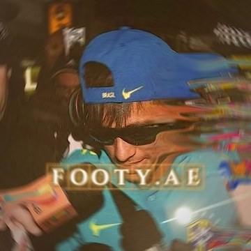
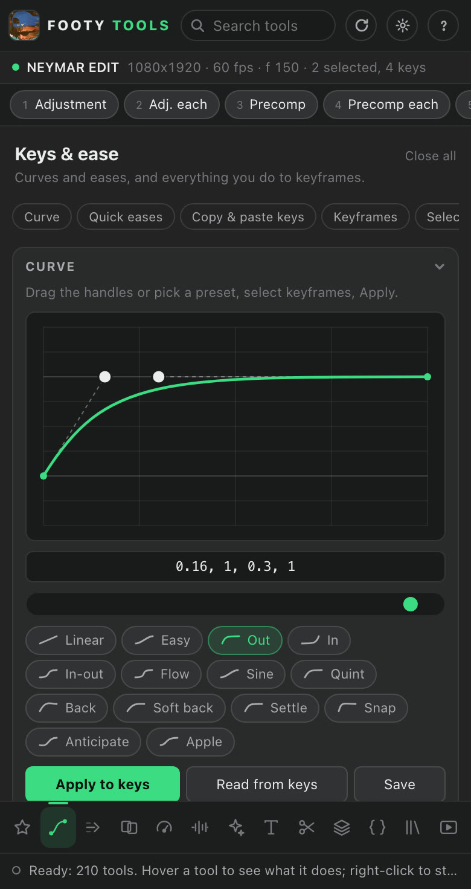
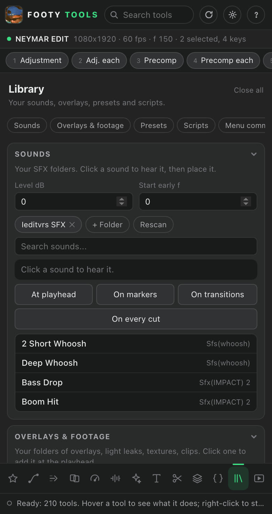

Footy Tools FreeEvery tool an editor reaches for. One panel.
Velocity ramps, impact shakes, transitions on the cut, beat sync, auto captions, one-layer colour, text, your SFX and presets. Select a layer, click a button, and it's one undo step. Made for football edits, useful for any After Effects edit.
Version 1.1.8 · After Effects 2022 or later · built and tested on Mac (Windows isn't tested yet) · updates itself

Look inside
A rail of tabs down the side, sections that fold away, and a search that finds any tool. Right-click a tool to star it into Favourites, next to the ones you used last.


What's in it
Everything Footy Tools adds is named "FT ..." so you can always find it, and every click is one Cmd+Z.
Speed Velocity
Velocity ramps on Time Remap, freeze, rewind, reverse, constant speed, Pixel Motion + motion blur in one click, and AI slow-mo: real in-between frames at 2x, 4x or 8x, made on your graphics card.
Beat Sync
Tap tempo, BPM markers, detect beats from your song, then a flash, shake, zoom, blur, velocity or freeze on every beat, or a bass zoom that follows the song. Cut at markers and drop clips onto beats.
Transitions 21
Zoom in, out and in + out, four whips, spins, roll, stretch, flash, warp flash, dips, blur dip, smear, glitch and shake on the cut, or one on every cut at once.
Animate 24 moves
Ins and outs on any curve, punch-in, smooth zoom, Ken Burns, six shake styles, handheld, flashes, exposure hits and speed blur.
Ease Curves
A curve editor with 14 presets and your own, quick eases, reverse, boomerang, nudge, stretch, stagger, clone keys to the playhead, key colours.
Colour One layer
One FT CC adjustment layer with 15 live sliders and 12 looks with a strength slider. Before/after in one click.
Text Captions
Auto captions that listen to your clip (on your computer), phrase by phrase or word by word. SRT files, 17 text animations, fades, After Effects' 300 text presets, titles, a scorebug and count-ups.
Layers Editing
Slip, ripple delete, close gaps, trims, replace footage keeping everything, precompose each, grid and split screen, a 3D depth stack, masks, audio, selection sets.
Library Yours
Your SFX (on every marker, transition or cut at once), overlays and footage, .ffx presets, scripts, and any After Effects menu command by name.
FX Looks
22 looks, hits at the playhead, RGB split, outline, letterbox, AI upscale (2x or 4x sharper), a button for each plug-in you have, and a search of every effect installed.
Expressions Library
Wiggle, jitter, float, pulse, bounce, squash, follow, loops, look-at, orbit and your own, with sliders. Bake to keys and find broken ones.
Render & project Export
Queue with any template, TikTok/4:5/YouTube comps, 9:16 with a blurred background, a background render you can keep editing over, and project clean-up.
Install
Footy Tools is a signed .zxp: the standard way After Effects extensions are installed. Takes a minute.
Download
Get FootyTools.zxp. It's always the newest version.
Get a ZXP installer
Free: aescripts ZXP/UXP Installer or Anastasiy's Extension Manager.
Install
Quit After Effects. Drag the .zxp onto the installer's window and wait until it says it's done.
Open it
Start After Effects, then Window > Extensions > Footy Tools. Dock it next to your timeline.
No installer app? Use Adobe's own installer
Creative Cloud comes with a command-line installer. Put the .zxp in your Downloads folder, run the line for your computer, then restart After Effects.
Mac, in Terminal (one line):
"/Library/Application Support/Adobe/Adobe Desktop Common/RemoteComponents/UPI/UnifiedPluginInstallerAgent/UnifiedPluginInstallerAgent.app/Contents/MacOS/UnifiedPluginInstallerAgent" --install ~/Downloads/FootyTools.zxpWindows, in Command Prompt (one line):
"C:\Program Files\Common Files\Adobe\Adobe Desktop Common\RemoteComponents\UPI\UnifiedPluginInstallerAgent\UnifiedPluginInstallerAgent.exe" /install "%USERPROFILE%\Downloads\FootyTools.zxp"It updates itself
Once a day the panel asks footy1x.store whether there's a new version. When there is, a green dot appears on its update button.
One click, no restart
Click Update: the new version swaps in and the panel reloads in place, without restarting After Effects. What's new shows what changed, and Go back returns to the version you had.
Signed, so it's really from us
Every update is signed. The panel checks the signature and the file's fingerprint before installing, and refuses anything else. On Windows, or if it was installed for all users, it tells you to download the new version instead.
Free, private, yours to use
Free
- Footy Tools is free for personal and commercial edits. No account, no key.
- Please link people to this page instead of sharing the file, and don't sell or re-upload it.
What the panel sends
- Once a day: a request for the latest version number, to footy1x.store.
- The first time you use AI slow-mo or AI upscale: the free engine (RIFE, 437 MB; Real-ESRGAN, 52 MB) downloads once from its official GitHub page. The AI itself runs on your computer.
- Nothing else. Your footage, projects and keyframes never leave your computer, and the panel has no tracking or analytics.
This website
footy1x.store counts page views with Cloudflare Web Analytics. It sets no cookies and doesn't follow individual visitors.
Requirements
After Effects 2022 (22.0) or later. Built and tested on Mac. It should work on Windows, but it hasn't been tested there yet: tell us if something doesn't.
Support
A bug, a tool you want, or it won't show up: Footy1x.ae@gmail.com. Say which After Effects version you're on and whether it's a Mac or a PC. If it isn't under Window > Extensions after installing, quit After Effects completely and open it again.